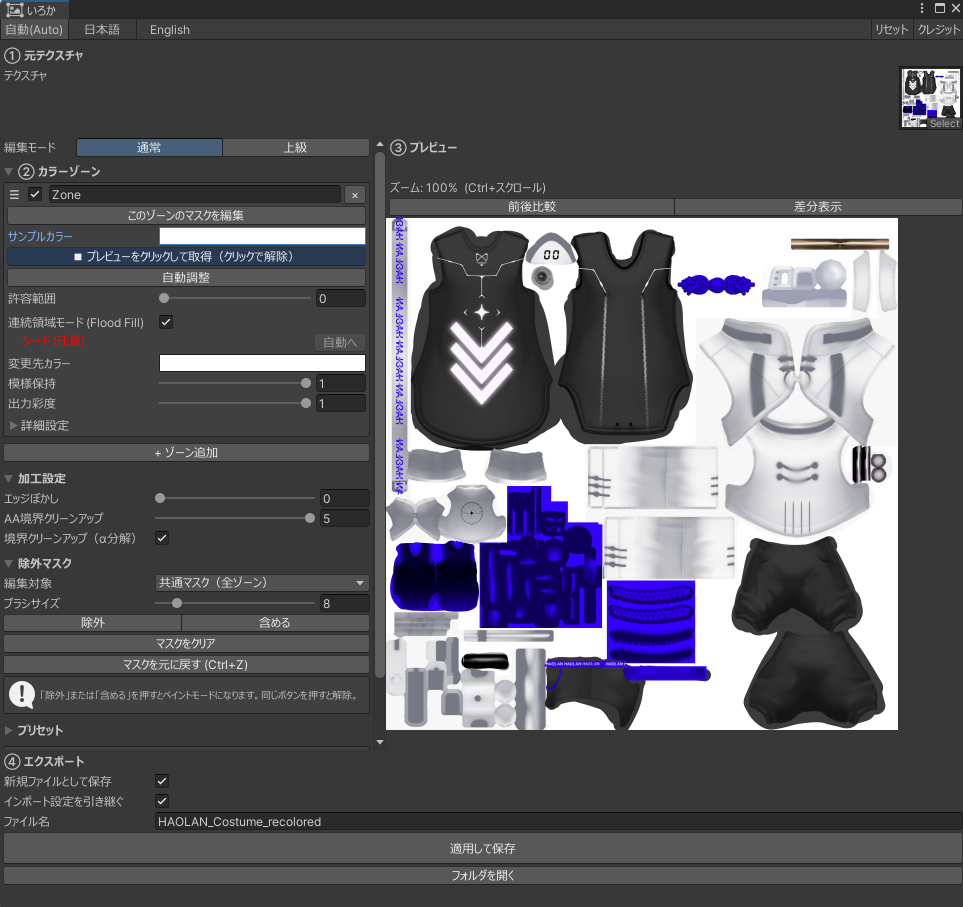
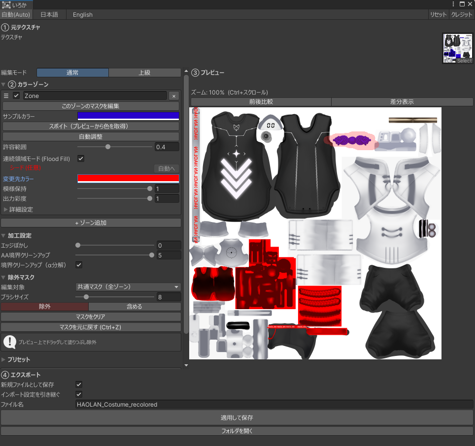
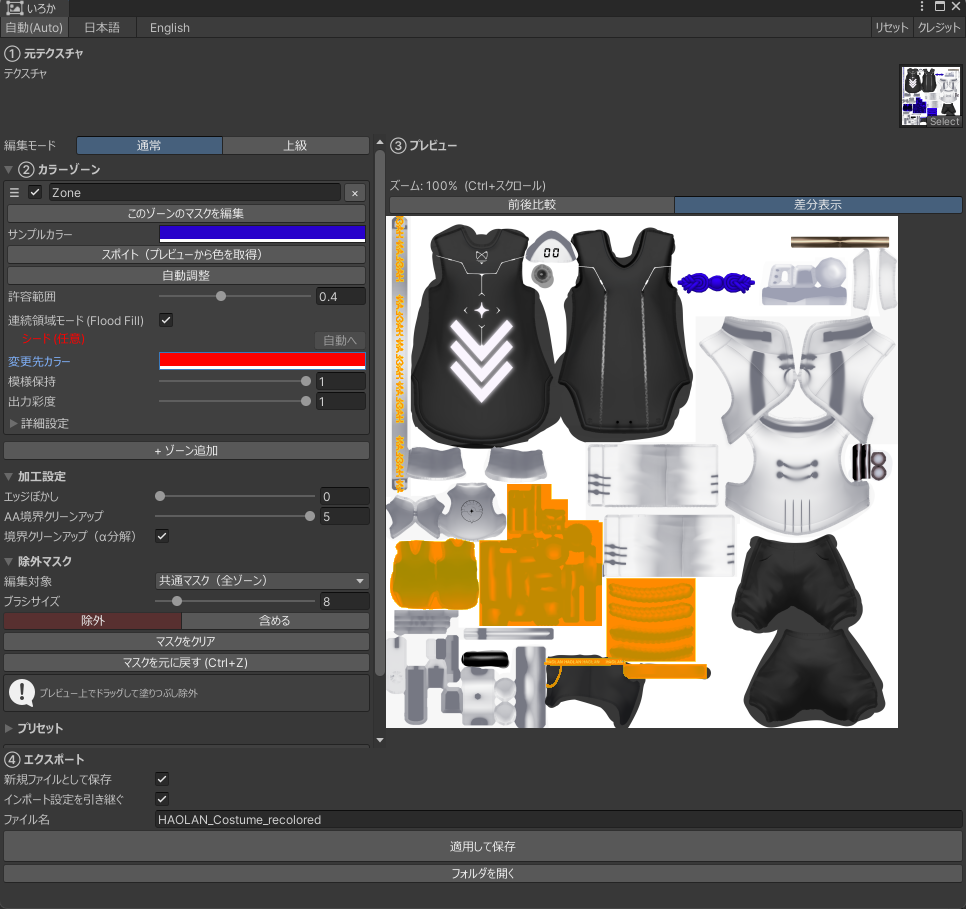

TEXTURE RECOLOR TOOL FOR UNITY
その色、
変えられます。
テクスチャを直接色替え。陰影・模様の見え方を保ちます
PSD不要｜PNG / JPG に対応
いろかIroca｜Unity用ツール
01 / COMPATIBILITYPSDがなくても、色を変えられる。
01PSD・改変データがない
02パーツが1枚に統合済み
03アトラス化（最適化）済み
元データが無くても、テクスチャ画像1枚あれば色替えできます。
02 / BASIC FLOW色を選んで、変更先を決める。
クリックした色に似た部分を自動で選択。陰影・模様はそのまま、色だけ変わります。
03 / COLOR ZONES色ごとに、変更範囲を分ける。
1スポイトで色を拾う
2変更先の色を決める
3優先度はドラッグで整理

スクリーンショット準備中スポイトで色を選択中の画面
1スポイトで対象色を取得
変えたい色ごとにゾーンを追加して、パーツ別に色替えできます。
04 / EXCLUSION MASK変えたくない場所だけ、守る。

スクリーンショット準備中マスクをブラシで塗っている画面
1ブラシで除外範囲を塗る
OK塗った場所は変わらない
OK全体用＋ゾーン用の2層
OKCtrl+Z で取り消し
似た色の巻き込みは、ブラシでさっと塗って除外できます。
05 / PREVIEW & PRESET仕上がりを確認してから書き出す。
OK前後比較・差分・拡大表示
OK設定はプリセットに保存
OKJSON書き出しで共有

スクリーンショット準備中変更前後の比較プレビュー画面
1前後比較・差分を切り替え
書き出す前に、仕上がりをしっかり確認できます。
06 / RECOLOR ENGINE陰影の見え方を保ったまま、色を移す。
いろかの再着色エンジンは知覚色空間 OkLab ベース。単純な色相回転と違い、明るさの見え方を保ったまま色を移すので、暗く沈みません。
07 / GETTING STARTED導入から書き出しまで、4ステップ。
1
unitypackage をインポート
導入はファイル1つ
2
Tools → いろか を開く
メニューから起動
まずは無料版で試す
Unity 2022.3.22f1｜入力 PNG / JPG → 出力 PNG｜基本無料（応援パックは任意）｜PolyForm Shield 1.0.0